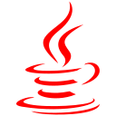
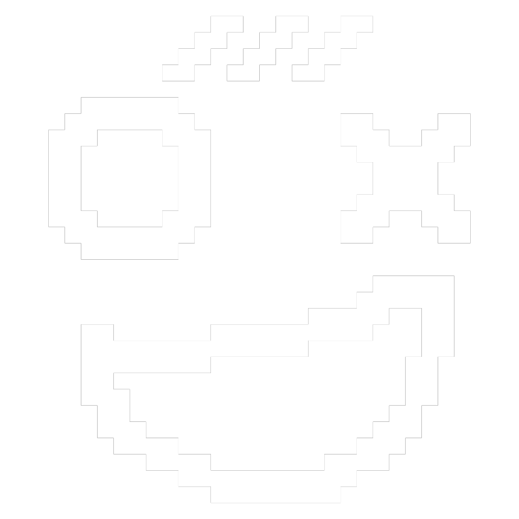

⠍⠁⠗⠅⠑⠇ ⠍⠑⠝⠉⠊⠁
Markel Mencía
Computer Engineering undergraduate
⠁⠃⠕⠥⠞ ⠍⠑
About me
I'm a third-year Computer Engineering student at Deusto University. My interests range from low-level and high-performance computing research/development to pedagogy. I also have some knowledge on cybersecurity, mainly focused on CTF (Capture The Flag) competitions. I have worked on multiple development projects, mostly focused on computer architecture but also on TCP communication or written work. At the moment, I'm working on compression algorithms and their performance in parallelized enviroments, such as CUDA.
⠎⠅⠊⠇⠇⠎
Skills

Golang
Golang is a language I quite like, and the one where I've written more complex code. I have experience with working with TCP communication and architecture replication for emulating devices with this language.
Java
Java is a language I'm very accustomed to. I've built full-stack applications on it, such as a text editor with assembling capabilities. From text processing to concurrency, I'm very comfortable with object oriented programming environments.

Databases
I have experience in designing and developing relational and vectorial databases, with technologies such as MySQL and PostgreSQL. I can also set up Docker images for portable deployment of such databases.
Python
Although not for development of full-stack applications, I'm accustomed to Python because of its use for CTF cybersecurity challenges. Oftentimes, Python scripts are used to exploit vulnerabilities in certain challenges, to decrypt, brute-force or communicate with different environments. That's what I've used it for.


C/C++
C and C++ are the languages I'm currently working with. I've built low-level programs such as a shell with them. I'm currently using C to build implementations of compression-related algorithms, such as the Burrows-Wheeler Transformation algoritm, to test its performance on parallel environments with CUDA.
⠏⠁⠗⠞⠊⠉⠊⠏⠁⠞⠊⠕⠝
Participation
0xDECODE
I'm an active member in the Deusto Electronic Club of Developers and Engineers (0xDECODE for short), a group that organizes free educational events in the Deusto University, for students, by students. In it, I've organizes multiple courses on a range of topics.

CTF Competitions
Although presently in a hiatus, I once was an active Capture The Flag participant. I've played on multiple CTF cybersecurity competitions, both by myself and with 0xDECODE members. Notably, I have played in an on-site competition, in Rennes, France, called the Midnight Flag CTF 2025 Finals.
Hackathons
I've participated in different hackathons: highly intensive coding challenges that usually last a weekend, in which you have to develop a full application or solution to a challenge. With different ranges of success, I've participated in the HackUDC 2025 hackathon in A Coruña and in the NASA Space Apps Challenge 2025 in Urduliz. I find these events very fruitful and I plan on participating in more hackathons next year.